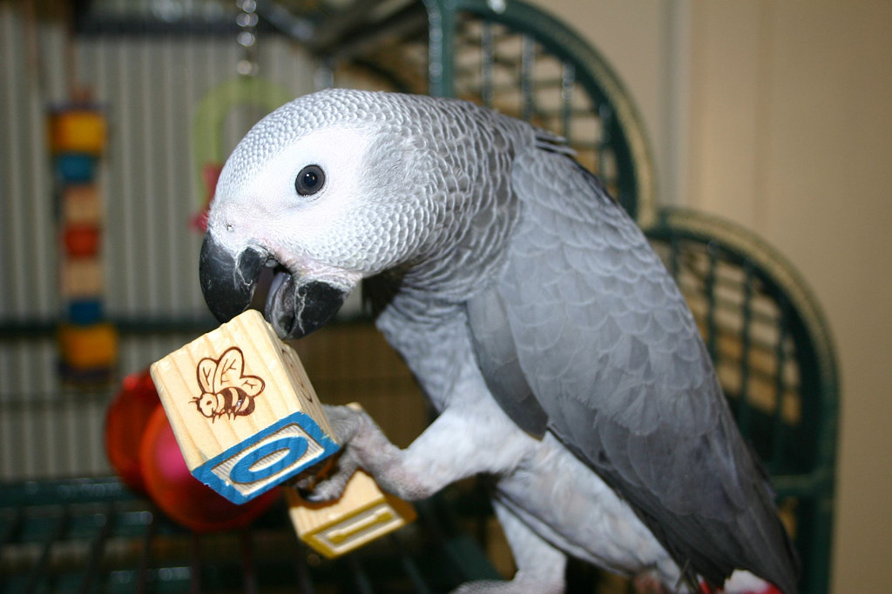

Características da Espécie
Sobre o Papagaio Cinzento Africano
O papagaio cinzento africano, conhecido popularmente como yaco, é amplamente considerado o papagaio mais inteligente do mundo. Nativo das florestas tropicais da África ocidental e central, esta espécie impressionante tem uma capacidade cognitiva comparável à de uma criança de 5 anos, conseguindo não apenas imitar sons, mas compreender o contexto e até comunicar intencionalmente com os seus tutores.
A sua plumagem de um cinzento uniforme, contrastada com a cauda vermelha viva, torna o yaco imediatamente reconhecível. Mas é a sua personalidade que verdadeiramente o distingue: sensível, carinhoso com quem confia, perspicaz e dotado de uma memória impressionante que lhe permite aprender centenas de palavras e frases ao longo da vida.
Em Portugal, o papagaio cinzento tem vindo a ganhar cada vez mais adeptos entre os apreciadores de aves exóticas. A sua capacidade de adaptação ao clima português — desde o norte mais frio ao Algarve mais quente — e a sua longevidade (pode viver mais de 60 anos) fazem dele um companheiro para a vida inteira. É, contudo, uma espécie exigente em termos de estimulação mental e social, pelo que requer tutores dedicados e disponíveis.
Na Paraíso de Aves, todos os nossos papagaios cinzentos são criados à mão desde pequenos, habituados ao contacto humano diário e socializados em ambiente familiar. Fornecemos toda a documentação CITES exigida por lei, certificado veterinário e acompanhamento pós-venda personalizado.
Temperamento e Inteligência
O yaco é uma ave de grande complexidade emocional. Estabelece laços profundos com os seus tutores e pode desenvolver fobia de abandono se não lhe for dado atenção suficiente. É simultaneamente sensível e resiliente: adapta-se bem a novos ambientes quando a transição é feita com calma, mas detesta mudanças bruscas de rotina.
A sua inteligência manifesta-se de formas surpreendentes: resolve puzzles, reconhece objectos por nome, compreende conceitos abstractos como "igual", "diferente", "maior" e "menor". O trabalho pioneiro da investigadora Dr. Irene Pepperberg com o yaco Alex demonstrou ao mundo científico que estas aves possuem capacidades cognitivas muito além do que se julgava possível em aves.
Do ponto de vista verbal, um yaco adulto bem estimulado pode ter um vocabulário activo de 300 a 1.000 palavras, utilizando-as em contexto correcto. Mais impressionante ainda, muitos yacos demonstram capacidade de criar frases novas combinando palavras que já conhecem — um nível de produção linguística que vai além da simples imitação.
Sociabilidade e Ligação ao Tutor
O cinzento africano tende a criar laços muito fortes com uma pessoa principal. Embora possa ser amigável com toda a família, é frequente que eleja um "favorito". Esta característica deve ser gerida com cuidado para evitar ciúmes e comportamentos destrutivos. É importante desde cedo habituá-lo a interagir positivamente com múltiplas pessoas.
Alimentação
Uma alimentação equilibrada é essencial para a saúde e longevidade do papagaio cinzento. A base da dieta deve assentar em pellets de alta qualidade (60–70% do total), complementados com frutas frescas, vegetais e uma pequena quantidade de sementes e nozes.
Alimentos Recomendados
- Frutas: maçã (sem sementes), pera, manga, papaia, kiwi, romã, frutos silvestres
- Vegetais: cenoura, brócolo, espinafres, abóbora, pimento vermelho, batata-doce cozida
- Proteínas: ovo cozido (ocasionalmente), leguminosas cozidas
- Sementes e nozes: nozes, amêndoas, avelãs — com moderação, pois são ricas em gordura
Alimentos Proibidos
- Abacate (altamente tóxico)
- Chocolate e café
- Álcool
- Cebola e alho em quantidade
- Sal e alimentos processados
- Sementes de maçã e pêssego (contêm cianeto)
Os yacos são especialmente susceptíveis à deficiência de cálcio e vitamina A. Certifique-se de que a dieta inclui alimentos ricos nestes nutrientes, como brócolo, cenoura e pimento vermelho. Consulte um veterinário especializado em aves para um plano alimentar personalizado.
Jaula e Habitat
O yaco necessita de uma jaula espaçosa que lhe permita abrir as asas completamente e movimentar-se com conforto. As dimensões mínimas recomendadas para um adulto são de 90 cm × 60 cm × 120 cm (largura × profundidade × altura), mas quanto maior melhor.
Os materiais devem ser resistentes — o yaco tem um bico poderoso capaz de destruir jaulas de construção frágil. Prefira aço inoxidável ou ferro pintado com tintas atóxicas. O espaçamento entre os varões não deve ultrapassar os 2,5 cm para evitar acidentes.
Enriquecimento Ambiental
Dada a sua elevada inteligência, o papagaio cinzento necessita de estimulação mental constante. A jaula deve conter:
- Vários poleiros de diferentes texturas e espessuras (madeira natural, sisal, acrílico)
- Brinquedos de puzzle e foraging (busca de alimento)
- Brinquedos de destruição (madeira, cortiça, palha) para satisfazer o instinto de mascar
- Espelhos e brinquedos de chocalho para estimulação sensorial
A temperatura ideal situa-se entre os 18°C e os 26°C. Evite correntes de ar directas e humidade excessiva. Em Portugal, o yaco adapta-se bem ao clima, mas durante os invernos mais frios do interior deve ter-se especial atenção ao aquecimento do espaço.
Cuidados Diários e Exercício
O yaco necessita de pelo menos 3 a 4 horas de interacção fora da jaula por dia. Este tempo deve incluir jogos, treino de comportamentos positivos, exploração livre e contacto físico (caricias no pescoço e cabeça, que são as zonas preferidas).
O banho é fundamental para a manutenção da plumagem. Dois a três banhos por semana, com spray morno ou um recipiente raso com água, são suficientes. Muitos yacos adoram o banho e rapidamente o associam a um momento prazeroso da rotina diária.
Rotina Diária Recomendada
- Manhã: Descobrir a gaiola, oferecer alimento fresco, 30 minutos de interacção
- Tarde: Sessão de treino com reforço positivo (10–15 min), tempo livre fora da jaula
- Noite: Banho (2–3x/semana), período tranquilo antes de cobrir a gaiola
O yaco necessita de 10 a 12 horas de descanso nocturno numa divisão escura e sossegada. Cubra a gaiola com um pano opaco para simular a escuridão da noite — isto regula o ciclo circadiano e promove um comportamento mais calmo durante o dia.
Saúde e Veterinário
O papagaio cinzento africano é geralmente uma ave robusta, mas tem predisposições para certas condições de saúde que o tutor deve conhecer.
Doenças Mais Comuns
- Doença de Becker (PBFD): Doença vírica que afecta penas e bico. Incurável mas detectável por análise de sangue.
- Aspergilose: Infecção fúngica do aparelho respiratório, geralmente associada a má ventilação ou humidade excessiva.
- Deficiência de cálcio e vitamina A: Comum em dietas baseadas exclusivamente em sementes. Pode causar problemas ósseos e imunidade reduzida.
- Depenamento compulsivo: Comportamento psicológico ligado a falta de estimulação, stress ou doença. Requer avaliação veterinária urgente.
Visitas Veterinárias
Recomenda-se consulta veterinária anual com um médico veterinário especializado em aves exóticas. Em Portugal, existem clínicas especializadas em Lisboa, Porto, Braga e Coimbra. A Paraíso de Aves fornece contactos de veterinários de confiança na sua área.
Documentação CITES e Legislação em Portugal
O papagaio cinzento africano está listado no Apêndice I da CITES (Convenção sobre o Comércio Internacional das Espécies da Fauna e Flora Selvagens Ameaçadas de Extinção), o que significa que o seu comércio internacional é altamente regulado.
Em Portugal, a aquisição de um yaco de criador registado requer a seguinte documentação:
- Certificado CITES: Emitido pela autoridade competente (ICNF — Instituto da Conservação da Natureza e das Florestas)
- Anilha de identificação: Anilha fechada colocada na cria, com número de registo único
- Certificado veterinário: Atestado de saúde emitido por médico veterinário
- Comprovativo da origem do criador: Documentação do establecimiento de cría registado
Na Paraíso de Aves, todos estes documentos são fornecidos de forma completa e legal. O nosso estabelecimento de criação está registado junto às autoridades espanholas e os documentos são reconhecidos em toda a União Europeia, incluindo Portugal.
É ilegal adquirir um papagaio cinzento sem documentação CITES válida em Portugal. Além de constituir crime ambiental, a ausência de documentação impossibilita o acesso a cuidados veterinários adequados e pode resultar na apreensão do animal.
Entrega em Portugal e Processo de Reserva
A Paraíso de Aves entrega papagaios cinzentos em todo Portugal continental, Madeira e Açores. O processo de entrega é cuidadosamente planeado para garantir o bem-estar da ave durante o transporte.
Processo de Reserva (Passo a Passo)
- 1. Contacto inicial: Envie-nos um e-mail ou preencha o formulário desta página
- 2. Confirmação de disponibilidade: Respondemos em menos de 24 horas com informação sobre aves disponíveis
- 3. Sinal de reserva: Após confirmação, é solicitado um sinal para garantir a sua ave
- 4. Preparação: A ave é preparada para a viagem com check-up veterinário e documentação CITES
- 5. Entrega: Envio por transportadora especializada em animais vivos, com caixa IATA certificada
O tempo de entrega para Portugal continental é geralmente de 1 a 3 dias úteis após confirmação de pagamento. Para Madeira e Açores, o transporte aéreo implica prazos adicionais e documentação sanitária específica — contacte-nos para detalhes.
Nota legal: A disponibilidade está sujeita a confirmação. O comprador é responsável por verificar os requisitos de posse vigentes na sua área de residência. Toda a documentação está em conformidade com a legislação europeia CITES.
Por que Escolher a Paraíso de Aves?
Criador Certificado CITES
Núcleo zoológico registado oficialmente. Documentação CITES 100% legal e rastreável.
CITES Oficial
Toda a documentação legal CITES incluída no preço.
Criados à Mão
Socializados desde bebés para máxima confiança.
Entrega Segura
Envio certificado para qualquer ponto de Portugal.
Garantia de Saúde
Certificado veterinário e acompanhamento pós-venda.
Apoio Personalizado
Aconselhamento antes e depois da adopção.
Perguntas Frequentes sobre o Papagaio Cinzento Africano
Espécies Relacionadas
Interessado em Adoptar um Papagaio Cinzento Africano?
Contacte-nos para verificar disponibilidade e iniciar o processo de reserva. Entregamos em todo Portugal continental, Madeira e Açores.
Solicitar Disponibilidade Enviar E-mail